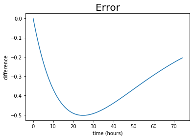

At midnight, with the temperature inside your house at 70 deg F and the temperature outside at -20 deg F, your furnace breaks down. Assuming that the cooling rate is 0.04 hours\(^{-1}\), when will the house reach 32 deg F?
Numerical solution: Solve directly by stepping the equation in time (requires an initial temperature as a “boundary value problem).
\(\frac{\Delta T}{\Delta t} = -R (T- T_s)\)
\(\frac{T_1 - T_0}{t_1 - t_0} = -R(T_0-T_s)\)
Solve for the updated temperature, or
\(T_1 = T_0 - R (T_0-T_s)(t_1-t_0)\)
The iterative solution is
\(T_2 = T_1 - R (T_1-T_s)(t_2-t_1)\)
\(T_3 = T_2 - R (T_2-T_s)(t_3-t_2)\)
\(T_4 = T_3 - R (T_3-T_s)(t_4-t_3)\)
$ $
If we take a uniform time step \(\Delta t\), then this iterative solution can be written, more compactly, as the Euler Algorithm, or
\(t^n = t^{n-1} + \Delta t\)
\(T^n = T^{n-1} - R (T^{n-1} - T_s) \Delta t\)
where \(n\) is an integer for the time step.
The exact solution (analytical solution to the ordinary differential equation) is
\(T = T_s + T_0 e^{-Rt}\)
\(T_0 = T(t=0) - T_s\)
Write a python script to plot the numerical and the analytical solution.
import numpy as npimport scipy.optimizeimport matplotlib.pyplot as pltdef exact_soln(x,T0,R,Ts):return (T0-Ts)*np.exp(-R*x)+TsR =0.04#cooling rate in hours^-1Ts =-20#outside temperatureT0 =70#initial inside temperature#plot the analytical result firsttfinal =3/R #plot to 3 e-foldsnt =100#number of points to plot#Temp = np.zeros(nt)#Temp[0] = T0time = np.arange(0,tfinal,tfinal/nt)plt.figure()plt.plot(time,exact_soln(time,T0,R,Ts), label='analytical')plt.title('House temperature',fontsize=20)plt.ylabel('Temperature (deg F)')plt.xlabel('time (hours)')#plt.show
# plot the difference between exact and numerical solutions.plt.figure()plt.plot(time, Temp-exact_soln(time,T0,R,Ts))plt.title('Error',fontsize=20)plt.ylabel('difference')plt.xlabel('time (hours)')plt.show

# determine time when house temperature reaches 32 deg F#use the "where" functionT32 = np.ones(nt)*32wh = np.nonzero(np.abs(Temp-T32) == np.min(np.abs(Temp-T32)))print('Time to house freezing: ', time[wh[0]], ' hours')